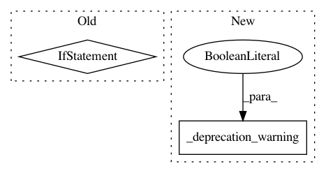

67c01455fe313a65cc65640e52892ed91e08ea8b,python/ray/tune/track/__init__.py,,init,#Any#,17
Before Change
// where that initial trial was created, and that creation line
// info is helpful to keep around anyway.
reinit_msg = "A session already exists in the current context."
if ignore_reinit_error:
if not _session.is_tune_session:
logger.warning(reinit_msg)
return
else:
raise ValueError(reinit_msg)
_session = _TrackSession(**session_kwargs)
def shutdown():
After Change
def init(ignore_reinit_error=True, **session_kwargs):
_deprecation_warning(soft=False)
def shutdown():
_deprecation_warning(soft=False)
In pattern: SUPERPATTERN
Frequency: 3
Non-data size: 2
Instances
Project Name: ray-project/ray
Commit Name: 67c01455fe313a65cc65640e52892ed91e08ea8b
Time: 2020-05-16
Author: rliaw@berkeley.edu
File Name: python/ray/tune/track/__init__.py
Class Name:
Method Name: init
Project Name: ray-project/ray
Commit Name: 67c01455fe313a65cc65640e52892ed91e08ea8b
Time: 2020-05-16
Author: rliaw@berkeley.edu
File Name: python/ray/tune/track/__init__.py
Class Name:
Method Name: shutdown
Project Name: ray-project/ray
Commit Name: 67c01455fe313a65cc65640e52892ed91e08ea8b
Time: 2020-05-16
Author: rliaw@berkeley.edu
File Name: python/ray/tune/track/__init__.py
Class Name:
Method Name: get_session